Gallery of 1d Classic applications¶
Contents
1-dimensional Advection¶
Directory: `$CLAW/classic/examples/advection_1d_example1`
Advecting square wave and Gaussian with periodic BCs.
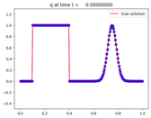 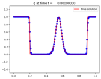 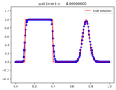Directory: `$CLAW/amrclaw/examples/advection_1d_example1`
AMR applied to Advecting square wave and Gaussian with periodic BCs.
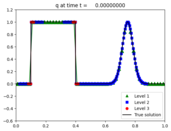 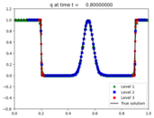
1-dimensional acoustics¶
Directory: `$CLAW/classic/examples/acoustics_1d_example1`
Acoustics equations with Gaussian initial data.


Directory: `$CLAW/amrclaw/examples/acoustics_1d_homogeneous`
AMR on acoustics equations with Gaussian initial data.
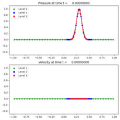 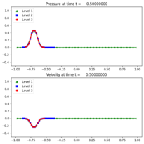
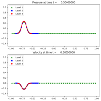
Directory: `$CLAW/classic/examples/acoustics_1d_heterogeneous`
Acoustics equations with interface showing reflection and transmission.
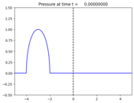 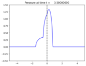
Directory: `$CLAW/amrclaw/examples/acoustics_1d_heterogeneous`
Acoustics equations with interface showing reflection and transmission.


1-dimensional Euler¶
Directory: `$CLAW/classic/examples/euler_1d_wcblast`
Woodward-Colella blast wave problem for Euler equations of gas dynamics.
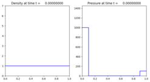 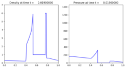 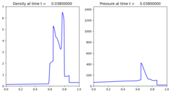Directory: `$CLAW/amrclaw/examples/euler_1d_wcblast`
AMR on Woodward-Colella blast wave problem for Euler equations of gas dynamics.
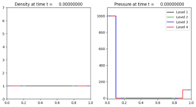 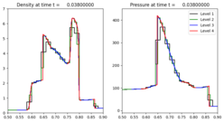
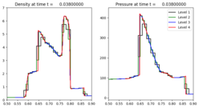